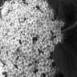
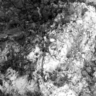
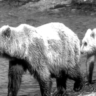
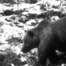
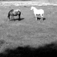
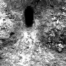
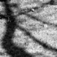

Where ViT-derived labels and human labels disagree — and what it does to a decoder.
The Vision Transformer has an interesting quirk in its 1000 object labelset. The first 397 labels refer to animate "objects" and the rest are inanimate objects.
From the label set https://github.com/anishathalye/imagenet-simple-labels/blob/master/imagenet-simple-labels.json (numpy indexing starts at 0):
394-->"sturgeon",
395-->"garfish",
396-->"lionfish",
397-->"pufferfish",
--------------------> Decision boundary between animate and inanimate
398-->"abacus",
399-->"abaya",
400-->"academic gown",
401-->"accordion",
402-->"acoustic guitar",
403-->"aircraft carrier"This created an opportunity for me to automatically label the Allen stimulus imageset and use those labels in training the logistic regression classifier. Specifically, I simply checked if the maximal logit was below or above the index 397 in the labels. Later, I started worrying if the labels are correct and I manually labeled the 118 natural scenes images. This procedure permits an interesting analysis to compare the machine labeled training data and human labeled training data.
First, the question: do ViT labels align with human labels? The answer is that ViT makes a one-sided error on 7 inanimate images (according to the human label) labeling them as animate. Here are the images:


This is the confusion matrix:
ViT inanimate ViT animate
Human inanimate 55 7
Human animate 0 56When we train a logistic regression model with the Adam optimizer on ViT derived labels (what I did as a first shot), we get these stats with respect to human ground truth:
Adam accuracy: 0.6949
Adam bal acc: 0.6950
Adam AUC: 0.7921Training that same classifier on human derived labels gives slightly better stats (with respect to human groundtruth):
Adam accuracy: 0.7203
Adam bal acc: 0.7183
Adam AUC: 0.8004Let's next decompose the evaluation into consensus images (both ViT and human annotations agree) and the 7 relabeled images.
It turns out that both classifiers behave the same on the relabeled images.
idx | human | vit | human-decoder | vit-decoder
064 | 0 | 1 | 0 | 0
070 | 0 | 1 | 1 | 1
076 | 0 | 1 | 0 | 0
078 | 0 | 1 | 1 | 1
093 | 0 | 1 | 1 | 1
107 | 0 | 1 | 0 | 0
110 | 0 | 1 | 1 | 1However on the consensus images, the human-trained classifier wins by 3 images.
Human-trained decoder accuracy: 0.7387
ViT-trained decoder accuracy: 0.7117
Difference: +0.0270 = 3 imagesThe errors decompose like this:
images [ 14 25 74 83 90 102 116]images [10 16 39 54]images [ 0 1 4 11 21 34 35 36 40 43 44 46 47 51 58 65 66 67
84 85 101 104 108 111 117]



